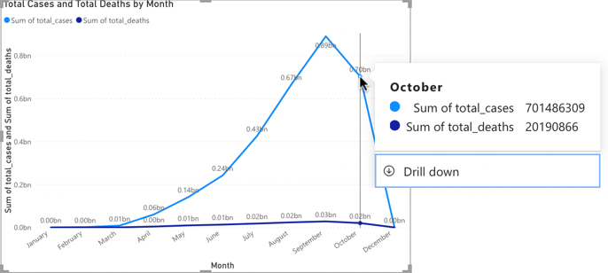
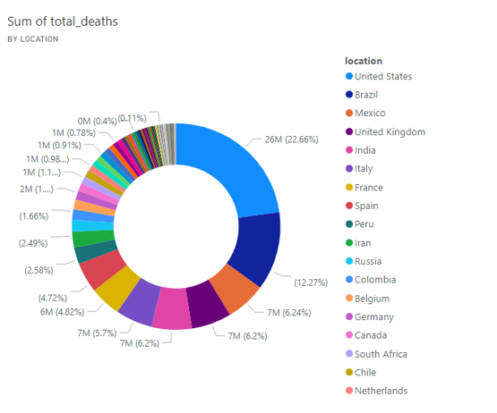
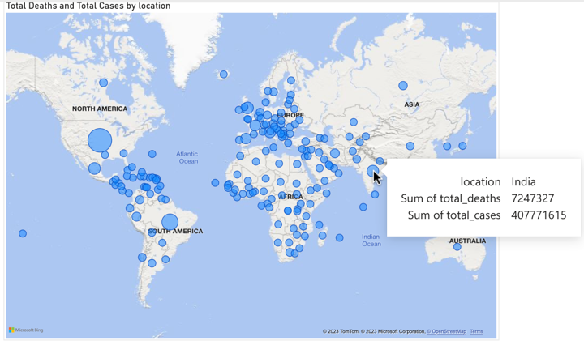
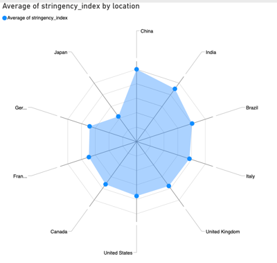
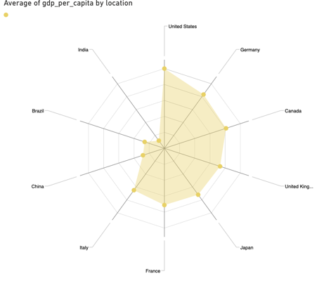
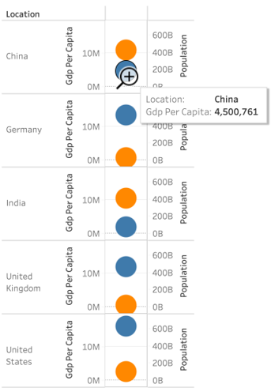
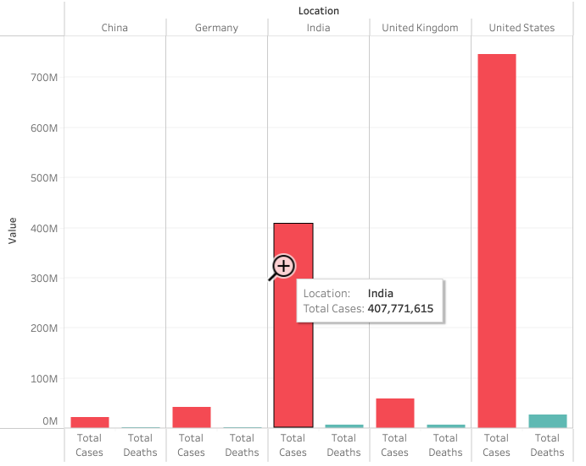
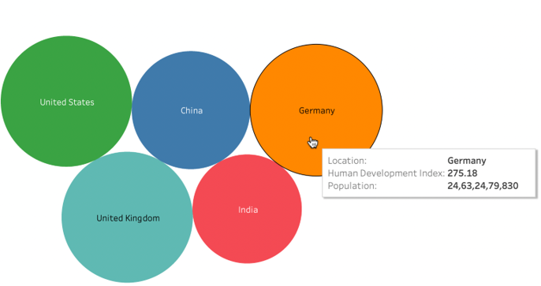
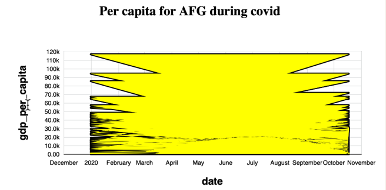
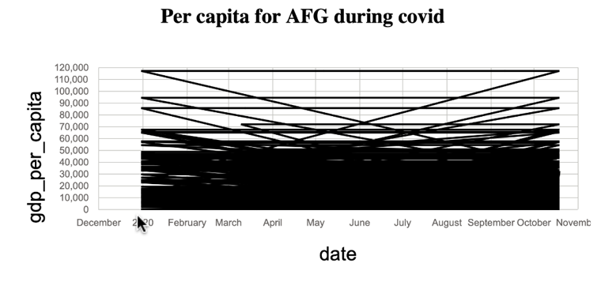

Impact of Covid on Economy

VIZUALIZATION TOOL USED: PowerBI
- This line chart represents total cases during COVID-19 period, in particular after the sharp increase till August-2020, the sudden drop in the cases was observed
- The main reason for the drop would be the lockdowns and vaccination awareness as more people opted for it.
Type of Idiom: Line Chat
Impact of Covid on Economy

VIZUALIZATION TOOL USED: PowerBI
- Along with a drop in cases, the total deaths were also significantly dropped.
- Due to wide availability of vaccines, it seems like people acquired relevant immunization to COVID virus.
Type of Idiom: Line Chat
Impact of Covid on Economy

VIZUALIZATION TOOL USED: PowerBI
- This line chart represents total cases and total deaths. It can be seen that relative to cases, the deaths were quite low in numbers.
- It would be like less than 10% of people would have a chance of falling to death.
Type of Idiom: Line Chat
Impact of Covid on Economy

VIZUALIZATION TOOL USED: PowerBI
- Those above donut charts show different countries total_cases and total_deaths, we chose this plot to observe what majority share a particular country is affected.
- It can be observed in both cases, total deaths and total deaths, the United States is highly affected and Brazil follows next.
Type of Idiom: Donut Chart
Impact of Covid on Economy

VIZUALIZATION TOOL USED: PowerBI
- This map would provide a better spatial view of what regions were affected most in a more holistic manner. It can be observed that, also as seen from the above graph, the most affected countries are United States and Brazil
- Almost every region was impacted, even small island countries.
Type of Idiom: Map
Impact of Covid on Economy

VIZUALIZATION TOOL USED: PowerBI
- This radar chart shows a stringent index, which can be called a response index. We plotted this on big economies in the world
- We can observe that this index is higher for China and India follows next.
Type of Idiom: Radar Chat 2.0.2
Impact of Covid on Economy

VIZUALIZATION TOOL USED: PowerBI
- This radar chart shows GDP per Capita during COVID-19 times. The United States has a higher index and India has the lower index.
- Although the United States is majorly affected, its GDP index is higher than the rest of the countries.
Type of Idiom: Radar Chat 2.0.2
Impact of Covid on Economy

VIZUALIZATION TOOL USED: Tableau
- In this chart sheet, we have shown GDP per Capita Index change over the COVID-19 period. We can observe that the United States has a higher gradient in GDP index.
- The reason for this higher gradient may be the majority of total_cases
Type of Idiom: Scattered circle Plots
Impact of Covid on Economy

VIZUALIZATION TOOL USED: Tableau
- In this bar we compared between total_cases to total_deaths. We can easily observe that the ratio of total_deaths to total_cases is very low.
- With this classification, we can conclude that COVID-19 is not very contagious that would leads to death.
Type of Idiom: Side-by-Side bars
Impact of Covid on Economy

VIZUALIZATION TOOL USED: PowerBI
- This chart represents the Human Development Index, The Human Development Index (HDI) is a statistical tool used to measure a country's overall achievement in its social and economic dimensions. It is significantly the same for countries, USA, Germany and the UK.
- India and China have lower indexes, large populations may be a reason.
Type of Idiom: Packed Bubbles
Impact of Covid on Economy

VIZUALIZATION TOOL USED: VizHub
- This area chart represents GDP variation for the year, 2020.
- We took Afghanistan as a sample country to plot this index.
Type of Idiom: Area Chat
Impact of Covid on Economy

VIZUALIZATION TOOL USED: VizHub
- This area chart represents GDP variation for the year, 2020.
- We took Afghanistan as a sample country to plot this index.
Type of Idiom: Area Chat